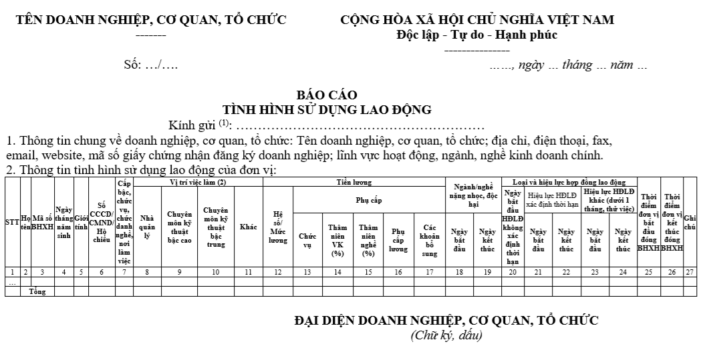
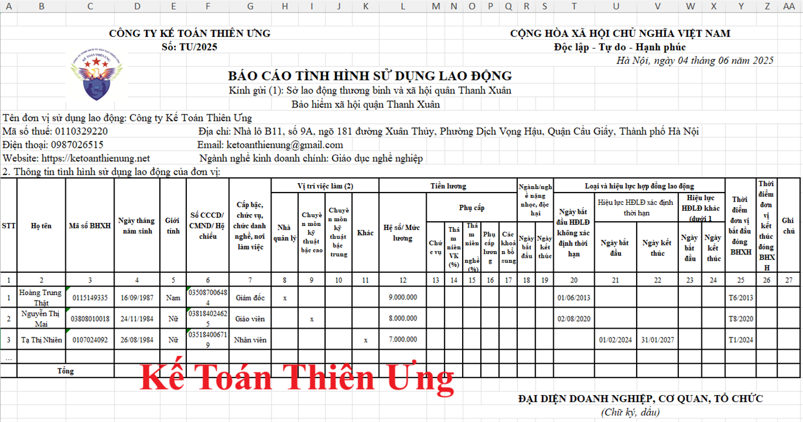

Theo quy định tại Bộ Luật lao động thì định kỳ người sử dụng lao động phải làm báo cáo tình hình thay đổi về lao động trong quá trình hoạt động với cơ quan chuyên môn về lao động thuộc Ủy ban nhân dân cấp tỉnh và thông báo cho cơ quan bảo hiểm xã hội.
Trong bài viết này, Kế Toán Diệu Tâm xin được chia sẻ với các bạn các nội dung liên quan đến việc làm báo cáo tình hình sử dụng lao động
Việc định kỳ báo cáo tình hình thay đổi về lao động tại khoản 2 Điều 12 của Bộ luật Lao động được quy định chi tiết tại Điều 4 của Nghị định 145/2020/NĐ-CP như sau:
Định kỳ 06 tháng (trước ngày 05 tháng 6) và hằng năm (trước ngày 05 tháng 12), người sử dụng lao động phải báo cáo tình hình thay đổi lao động đến Sở Lao động - Thương binh và Xã hội thông qua Cổng Dịch vụ công Quốc gia theo Mẫu số 01/PLI Phụ lục I ban hành kèm theo Nghị định 145/2020/NĐ-CP và thông báo đến cơ quan bảo hiểm xã hội cấp huyện nơi đặt trụ sở, chi nhánh, văn phòng đại diện.
Trường hợp người sử dụng lao động không thể báo cáo tình hình thay đổi lao động thông qua Cổng Dịch vụ công Quốc gia thì gửi báo cáo bằng bản giấy theo Mẫu số 01/PLI Phụ lục I ban hành kèm theo Nghị định 145/2020/NĐ-CP đến Sở Lao động - Thương binh và Xã hội và thông báo đến cơ quan bảo hiểm xã hội cấp huyện nơi đặt trụ sở, chi nhánh, văn phòng đại diện.
Theo điều 71 của Nghị định 129/2025/NĐ-CP quy định về phân định thẩm quyền của chính quyền địa phương 02 cấp trong lĩnh vực quản lý nhà nước của Bộ Nội vụ thì:
Điều 71. Báo cáo sử dụng lao động
Việc định kỳ báo cáo tình hình thay đổi về lao động theo quy định tại khoản 2 Điều 4 Nghị định số 145/2020/NĐ-CP ngày 14 tháng 12 năm 2020 của Chính phủ quy định chi tiết và hướng dẫn thi hành một số điều của Bộ luật Lao động về điều kiện lao động và quan hệ lao động (được sửa đổi, bổ sung bởi khoản 1 Điều 73 Nghị định số 35/2022/NĐ-CP ngày 28 tháng 5 năm 2022 của Chính phủ quy định quản lý khu công nghiệp và khu kinh tế) như sau:
Định kỳ 06 tháng (trước ngày 05 tháng 6) và hằng năm (trước ngày 05 tháng 12), người sử dụng lao động phải báo cáo tình hình thay đổi lao động đến Sở Nội vụ thông qua cổng Dịch vụ công Quốc gia theo Mẫu số 01/PLI Phụ lục I ban hành kèm theo Nghị định số 145/2020/NĐ-CP và thông báo đến cơ quan bảo hiểm xã hội khu vực nơi đặt trụ sở, chi nhánh, văn phòng đại diện. Trường hợp người sử dụng lao động không thể báo cáo tình hình thay đổi lao động thông qua cổng Dịch vụ công Quốc gia thì gửi báo cáo bằng bản giấy theo Mẫu số 01/PLI Phụ lục I ban hành kèm theo Nghị định số 145/2020/NĐ-CP đến Sở Nội vụ và thông báo đến cơ quan bảo hiểm xã hội khu vực nơi đặt trụ sở, chi nhánh, văn phòng đại diện. Đối với lao động làm việc trong khu công nghiệp, khu kinh tế, người sử dụng lao động phải báo cáo tình hình thay đổi lao động đến Sở Nội vụ, cơ quan bảo hiểm xã hội khu vực nơi đặt trụ sở, chi nhánh, văn phòng đại diện và Ban quản lý khu công nghiệp, khu kinh tế để theo dõi.
Sở Nội vụ có trách nhiệm tổng hợp tình hình thay đổi về lao động trong trường hợp người sử dụng lao động gửi báo cáo bằng bản giấy để cập nhật đầy đủ thông tin theo Mẫu số 02/PLI Phụ lục I ban hành kèm theo Nghị định số 145/2020/NĐ-CP
Vậy là: Hàng năm, doanh nghiệp phải làm báo cáo tình hình sử dụng lao động 2 lần:
+ Lần 1: 6 tháng đầu năm => Phải nộp về Sở Nội vụ trước ngày 05/06
+ Lần 2: cả năm => Phải nộp về Sở Nội vụ trước ngày 05/12
+ Lần 2: cả năm => Phải nộp về Sở Nội vụ trước ngày 05/12
Cách nộp báo cáo tình hình sử dụng lao động:
* Cách 1: Nộp tại Cổng Dịch vụ công Quốc gia
Đơn vị thực hiện “Thủ tục liên thông đăng ký điều chỉnh đóng BHXH bắt buộc, BHYT, BHTN và báo cáo tình hình sử dụng lao động” tại Cổng thông tin điện tử: https://dichvucong.gov.vn/
* Cách 2: Nộp báo cáo bằng bản giấy tại Sở Nội vụ
Mẫu báo cáo: Mẫu số 01/PLI Phụ lục I ban hành kèm theo Nghị định 145/2020/NĐ-CP
Mẫu số 01/PLI - Báo cáo tình hình sử dụng lao động (do người sử dụng lao động lập) như sau:

Cách làm báo cáo tình hình sử dụng lao động theo Mẫu số 01/PLI ban hành kèm theo Nghị định 145/2020/NĐ-CP như sau:
(1) Dòng "Kính gửi": các bạn ghi là:
Sở Lao động - Thương binh và Xã hội; cơ quan bảo hiểm xã hội cấp quận, huyện nơi đặt trụ sở, chi nhánh, văn phòng đại diện
(2) Vị trí việc làm phân loại theo:
- Cột (8) Nhà quản lý: Nhóm này bao gồm những nhà lãnh đạo, quản lý làm việc trong các ngành, các cấp và trong các cơ quan, tổ chức, doanh nghiệp có giữ các chức vụ, có quyền quản lý, chỉ huy, điều hành từ trung ương tới cấp xã;
- Cột (9) Chuyên môn kỹ thuật bậc cao: Nhóm này bao gồm những nghề đòi hỏi phải có kiến thức chuyên môn, nghiệp vụ và kinh nghiệm ở trình độ cao (đại học trở lên) trong lĩnh vực khoa học và kỹ thuật, sức khỏe, giáo dục, kinh doanh và quản lý, công nghệ thông tin và truyền thông, luật pháp, văn hóa, xã hội;
- Cột (10) Chuyên môn kỹ thuật bậc trung: Nhóm này bao gồm những nghề đòi hỏi kiến thức và kinh nghiệm ở trình độ bậc trung (cao đẳng, trung cấp) về các lĩnh vực khoa học và kỹ thuật, sức khỏe, kinh doanh và quản lý, luật pháp, văn hóa, xã hội, thông tin và truyền thông, giáo viên, giáo dục, công nghệ thông tin.
- Cột (9) Chuyên môn kỹ thuật bậc cao: Nhóm này bao gồm những nghề đòi hỏi phải có kiến thức chuyên môn, nghiệp vụ và kinh nghiệm ở trình độ cao (đại học trở lên) trong lĩnh vực khoa học và kỹ thuật, sức khỏe, giáo dục, kinh doanh và quản lý, công nghệ thông tin và truyền thông, luật pháp, văn hóa, xã hội;
- Cột (10) Chuyên môn kỹ thuật bậc trung: Nhóm này bao gồm những nghề đòi hỏi kiến thức và kinh nghiệm ở trình độ bậc trung (cao đẳng, trung cấp) về các lĩnh vực khoa học và kỹ thuật, sức khỏe, kinh doanh và quản lý, luật pháp, văn hóa, xã hội, thông tin và truyền thông, giáo viên, giáo dục, công nghệ thông tin.
Mẫu báo cáo tình hình sử dụng lao động được làm trên file Excel của công ty Kế Toán Diệu Tâm để các bạn tham khảo như sau:

Các bạn muốn tải mẫu báo cáo tình hình sử dụng lao động này về để tham khảo thì gửi mail về địa chỉ ketoandieutam@gmail.com => Kế Toán Diệu Tâm sẽ gửi lại mẫu báo cáo tình hình sử dụng lao động này cho các bạn
Phạt vi phạm hành chính liên quan tới báo cáo tình hình sử dụng lao động:
Theo quy định tại Nghị định 12/2022/NĐ-CP quy định xử phạt vi phạm hành chính trong lĩnh vực lao động, bảo hiểm xã hội thì:
Điều 8. Vi phạm về tuyển dụng, quản lý lao động
2. Phạt tiền từ 5.000.000 đồng đến 10.000.000 đồng đối với người sử dụng lao động có một trong các hành vi sau đây:
c) Không báo cáo tình hình thay đổi về lao động theo quy định;
Lưu ý: Theo khoản 1 Điều 6 Nghị định 12/2022/NĐ-CP thì mức phạt tiền nêu trên áp dụng đối với cá nhân, trường hợp tổ chức vi phạm thì xử phạt bằng 02 lần mức phạt tiền đối với cá nhân.
=> Vậy là: Nếu công ty bạn mà không làm báo cáo tình hình sử dụng lao động thì có thể sẽ bị phạt tiền từ 10 đến 20 triệu đồng.